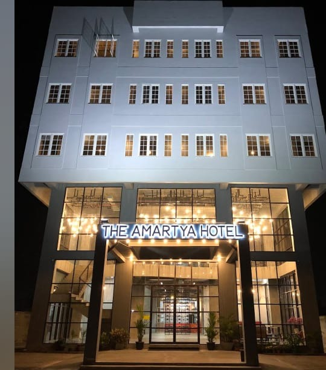
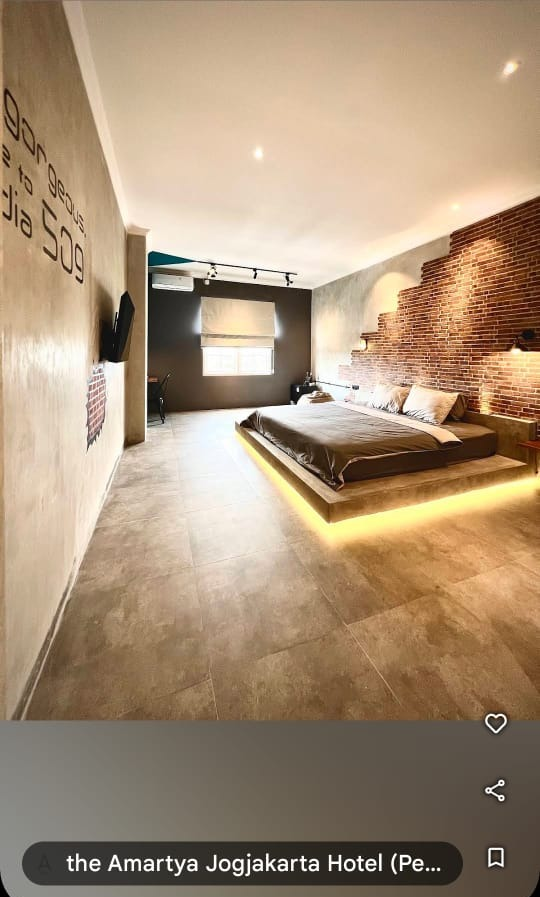
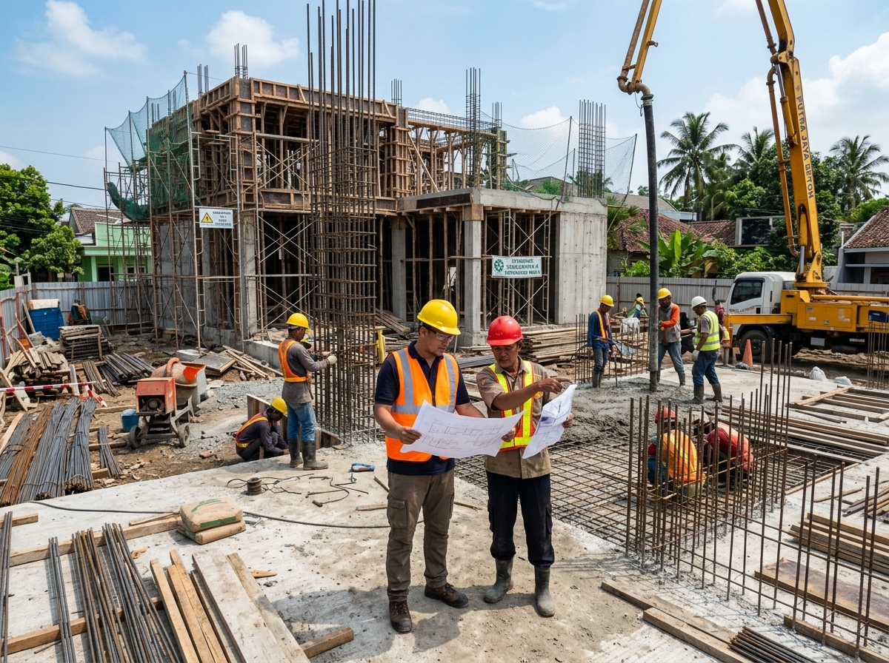

Mandor Utama

Interior Presisi

Struktur SNI
Proyek Riil: Hotel The Amartya Yogyakarta
kurniasejahtera.id
•
Jakarta • Semarang • Jawa & Bali
SOLUSI TERPERCAYA
KONTRAKTOR PROYEK
Kurnia Sejahtera hadir sebagai mitra General Contractor terpercaya pelaksana pembangunan baru dan renovasi fisik bangunan komersial (Hotel, Ruko, Gedung Kantor, Klinik, Studio) serta residensial mewah dengan pengawasan mandor langsung, material berstandar SNI, kontrak kerja SPK sah bermaterai, dan sistem termin 3 tahap yang transparan.
100%
RAB Rinci & Akurat
SPK
Sah Bermaterai
3 Tahap
Termin Bertahap
Garansi
Pasca Serah Terima